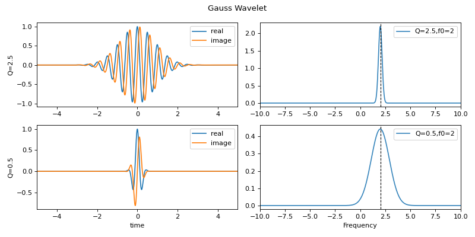
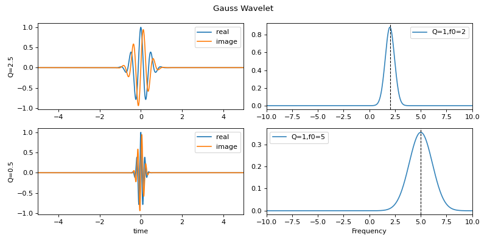
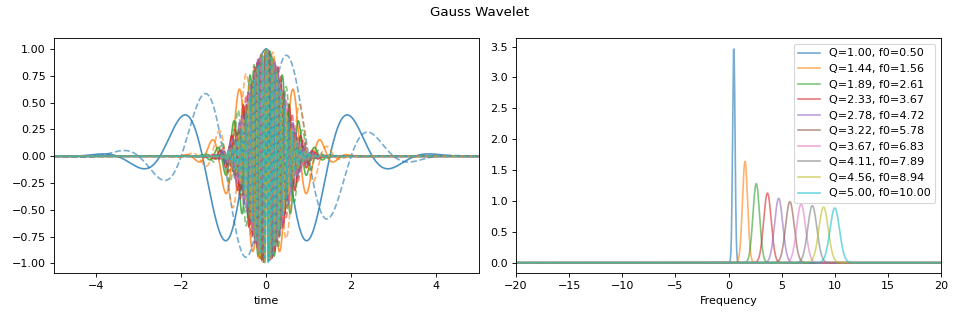

spkit.cwt.GaussWave¶
- spkit.cwt.GaussWave(t, f, f0, Q, t0=0)¶
Gaussian Wavelet
Generate time and frequency domain gaussian wavelet functions
\[ \begin{align}\begin{aligned}\psi(t) &= e^{-a(t-t_0)^{2}} \cdot e^{-2\pi jf_0(t-t_0)}\\\psi(f) &= \sqrt{\pi/a}\left( e^{-2\pi jft_0}\cdot e^{-\pi^{2}((f-f_0)^{2})/a}\right)\end{aligned}\end{align} \]where
\[a = \left( \frac{f_0}{Q} \right)^{2}\]- The main parametres of Gaussian Wavelet are:
f0 - center frequency
Q - associated with spread of bandwidth, as a = (f0/Q)^2
- Parameters:
- t: 1d array,
time span array corresponding to signal for analysis,
must be centered at 0
- f: 1d array,
frquency array for gaussian wavelet
- f0: array
array of center frquencies for wavelets, default: np.linspace(0.1,10,100) [scale value]
- Q: float or array
array of q-factor for each wavelet, e.g. 0.5 (default) or np.linspace(0.1,5,100)
if array, should be of same size as f0
- t0: float, default=0,
time shift of wavelet, or phase shift in frquency, Not suggeestive to change
- Returns:
- wttime-domain wavelet(s)
- wffrequency-domain wavelet(s)
See also
Notes
It is efficient and easy to use
ScalogramCWTwith wType==’Gauss’- code::
XW,S = ScalogramCWT(x,t,fs=fs,wType=’Gauss’,PlotPSD=True,PlotW=True, f0=f0,Q=Q)
References
wikipedia -
Examples
#sp.cwt.GaussWave import numpy as np import matplotlib.pyplot as plt import spkit as sp fs = 128 #sampling frequency t = np.linspace(-5,5,fs*10+1) #time f = np.linspace(-fs//2,fs//2,2*len(t)) #frequency range f0 = 2 #np.linspace(0.1,5,2)[:,None] Q1 = 2.5 #np.linspace(0.1,5,10)[:,None] Q2 = 0.5 #np.linspace(0.1,5,10)[:,None] wt1,wf1 = sp.cwt.GaussWave(t,f,f0=f0,Q=Q1) wt2,wf2 = sp.cwt.GaussWave(t,f,f0=f0,Q=Q2) plt.figure(figsize=(10,5)) plt.subplot(221) plt.plot(t,wt1.T.real,label='real') plt.plot(t,wt1.T.imag,'-',label='image') plt.xlim(t[0],t[-1]) #plt.xlabel('time') plt.ylabel('Q=2.5') plt.legend() plt.subplot(222) plt.plot(f,abs(wf1.T), alpha=0.9,label=f'Q={Q1},f0={f0}') plt.xlim(f[0],f[-1]) plt.xlim(-10,10) plt.legend() plt.axvline(f0,color='k',lw=1,ls='--') plt.subplot(223) plt.plot(t,wt2.T.real,label='real') plt.plot(t,wt2.T.imag,'-',label='image') plt.xlim(t[0],t[-1]) plt.xlabel('time') plt.ylabel('Q=0.5') plt.legend() plt.subplot(224) plt.plot(f,abs(wf2.T), alpha=0.9,label=f'Q={Q2},f0={f0}') plt.xlim(f[0],f[-1]) plt.xlim(-10,10) plt.axvline(f0,color='k',lw=1,ls='--') plt.xlabel('Frequency') plt.legend() plt.suptitle('Gauss Wavelet') plt.tight_layout() plt.show()
 ############################## #sp.cwt.GaussWave import numpy as np import matplotlib.pyplot as plt import spkit as sp fs = 128 #sampling frequency t = np.linspace(-5,5,fs*10+1) #time f = np.linspace(-fs//2,fs//2,2*len(t)) #frequency range f01 = 2 #np.linspace(0.1,5,2)[:,None] f02 = 5 #np.linspace(0.1,5,2)[:,None] Q = 1 #np.linspace(0.1,5,10)[:,None] wt1,wf1 = sp.cwt.GaussWave(t,f,f0=f01,Q=Q) wt2,wf2 = sp.cwt.GaussWave(t,f,f0=f02,Q=Q) plt.figure(figsize=(10,5)) plt.subplot(221) plt.plot(t,wt1.T.real,label='real') plt.plot(t,wt1.T.imag,'-',label='image') plt.xlim(t[0],t[-1]) #plt.xlabel('time') plt.ylabel('Q=2.5') plt.legend() plt.subplot(222) plt.plot(f,abs(wf1.T), alpha=0.9,label=f'Q={Q},f0={f01}') plt.xlim(f[0],f[-1]) plt.xlim(-10,10) plt.legend() plt.axvline(f01,color='k',lw=1,ls='--') plt.subplot(223) plt.plot(t,wt2.T.real,label='real') plt.plot(t,wt2.T.imag,'-',label='image') plt.xlim(t[0],t[-1]) plt.xlabel('time') plt.ylabel('Q=0.5') plt.legend() plt.subplot(224) plt.plot(f,abs(wf2.T), alpha=0.9,label=f'Q={Q},f0={f02}') plt.xlim(f[0],f[-1]) plt.xlim(-10,10) plt.axvline(f02,color='k',lw=1,ls='--') plt.xlabel('Frequency') plt.legend() plt.suptitle('Gauss Wavelet') plt.tight_layout() plt.show()
 ############################## #sp.cwt.GaussWave import numpy as np import matplotlib.pyplot as plt import spkit as sp fs = 100 #sampling frequency t = np.linspace(-5,5,fs*10+1) #time f = np.linspace(-fs//2,fs//2,2*len(t)) #frequency range f0 = np.linspace(0.5,10,10)[:,None] Q = np.linspace(1,5,10)[:,None] wt,wf = sp.cwt.GaussWave(t,f,f0=f0,Q=Q) LABELS = [f'Q={j[0]:,.2f}, f0={i[0]:,.2f}' for (i, j) in zip(f0, Q)] plt.figure(figsize=(12,4)) plt.subplot(121) plt.plot(t,wt.T.real, alpha=0.8) plt.plot(t,wt.T.imag,'--', alpha=0.6) plt.xlim(t[0],t[-1]) plt.xlabel('time') plt.subplot(122) plt.plot(f,abs(wf.T), alpha=0.6,label=LABELS) plt.xlim(f[0],f[-1]) plt.xlim(-20,20) plt.xlabel('Frequency') plt.legend() plt.suptitle('Gauss Wavelet') plt.tight_layout() plt.show()
